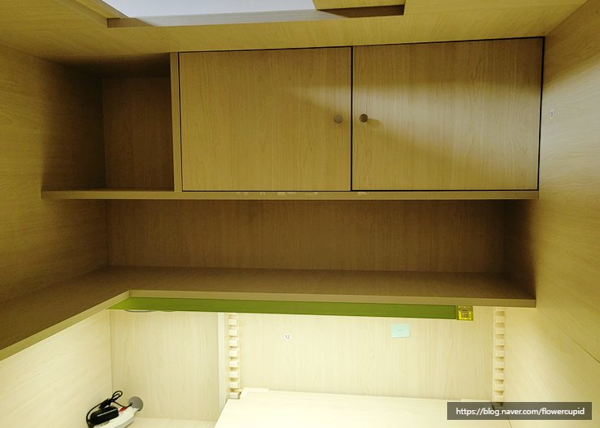
분해 전 점검벙커침대 하부 책상·상부장 구조 확인
침대 아래 책상판과 상부 수납장이 한 몸으로 붙은 일체형 벙커침대입니다. 분해 전에 판재 연결 위치와 조립 순서를 먼저 확인합니다.
이사업체가 거절한 벙커침대·이층침대·키즈침대, 코니처가 분해·해체하고 새 방에서 흔들림 없이 다시 조립해 드립니다.
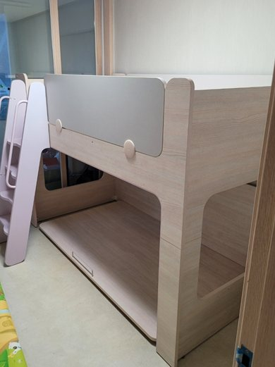
이사 일정에 맞춰 해체 → 이동 → 재조립까지 직접 책임집니다.
책상·수납장·계단이 붙은 일체형부터 철재 벙커침대까지 분해 이전.
안전가드, 사다리 고정 상태까지 확인해 아이가 안심하고 쓰게 재조립.
이층침대 이전은 물론 단층침대 2개로 분리 재조립도 가능합니다.
시몬스 프레임·헤드보드 분해 이동 후 새집에서 재설치.
분해·해체·재조립이 막혀 있는 경우, 가장 많이 받는 문의입니다.
이삿짐 센터와 별도로 침대만 따로 분해·재조립해 드립니다.
부속이 모여 있는 상태에서 재설치만 맡기셔도 됩니다.
이사 없이 방간이동·가구 재배치도 가능합니다.
이층침대 이전과 분리, 새 방 치수에 맞춘 배치까지 도와드립니다.
원목 결과 마루 바닥을 보호하며 작업합니다.
이사 날짜에 맞춘 일정 조율이 가능합니다.
아래 정보와 사진 몇 장이면 견적이 빨라집니다.
| 침대 종류·브랜드 | 벙커 / 이층 / 단층 / 시몬스 등 모델명을 알려 주세요. 전체 사진 1~2장이면 충분합니다. |
|---|---|
| 소재·구조 | 원목·철재·MDF, 책상·수납장·계단 일체형인지 알려 주세요. |
| 현재 상태 | 조립 상태인지, 이미 해체되어 있는지(재조립만 필요한지) 알려 주세요. |
| 출발·도착 주소 | 동 단위 주소, 층수, 엘리베이터 유무를 알려 주세요. |
| 희망 날짜 | 이사 날짜가 정해져 있다면 함께 알려 주세요. |
모든 작업은 방문 당일 한 번에 진행합니다.
코니처 네이버 블로그에 기록된 실제 작업 사진입니다. 더 많은 사례는 블로그에서 확인하세요.

분해 전 점검침대 아래 책상판과 상부 수납장이 한 몸으로 붙은 일체형 벙커침대입니다. 분해 전에 판재 연결 위치와 조립 순서를 먼저 확인합니다.
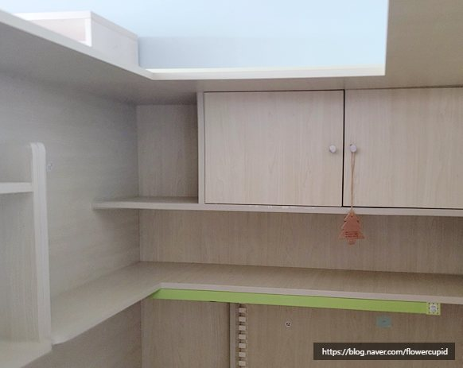
분해 전 점검책상 선반과 상부장 문, 높이 조절 지지대까지 구조를 확인하고 부속 누락 없이 분리할 순서를 잡았습니다.
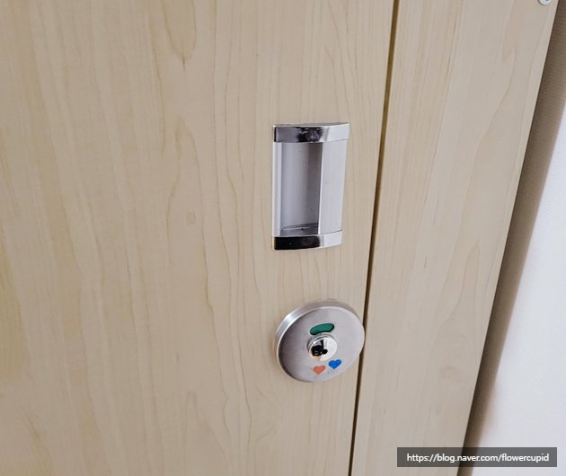
부속 보관도어 손잡이와 잠금장치 같은 금속 부속은 분해 전에 따로 분리해 보관하고, 재조립 때 원래 위치에 맞춰 달았습니다.
이사업체가 분해 재조립을 거절한 벙커침대를 당일 분해·이동·재조립까지 마쳤습니다. 사다리와 안전가드 고정 상태까지 확인했습니다.
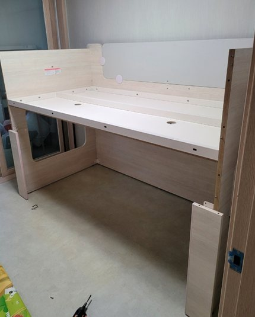
벙커침대 해체하단 책상판과 측면 패널을 순서대로 분리하는 단계입니다. 볼트 위치별로 부속을 구분해 둡니다.
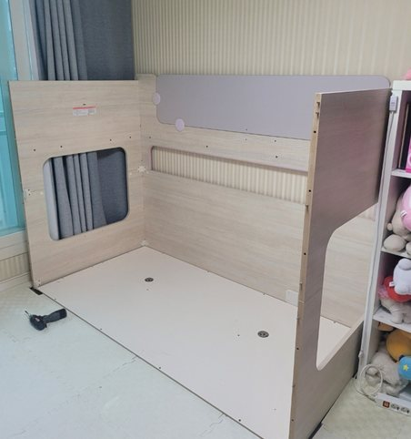
벙커침대 해체상판을 걷어낸 프레임 단계입니다. 좁은 현관·엘리베이터로 옮길 수 있게 패널 단위로 나눴습니다.
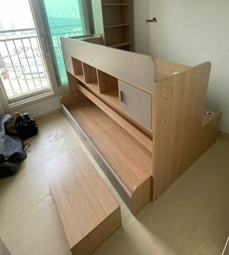
벙커침대 해체수납 박스와 프레임을 분리해 문틀을 통과할 수 있는 크기로 나눈 모습입니다. 슬랫과 연결 핀은 따로 보관합니다.
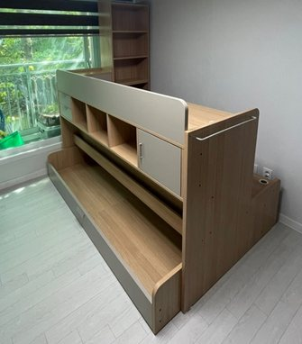
벙커침대 재조립수납 계단과 상부 수납장이 있는 구성을 새 방 구조에 맞춰 다시 세웠습니다.
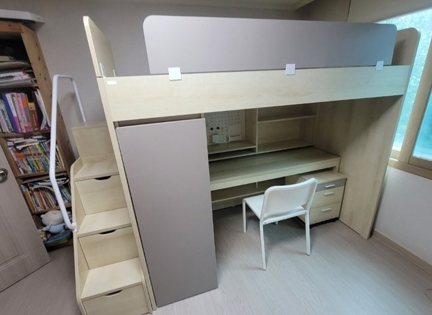
재설치만이사업체가 해체·이동만 하고 가신 침대를 새집에서 재설치했습니다. 계단, 책상, 책장까지 흔들림 없이 다시 맞췄습니다.
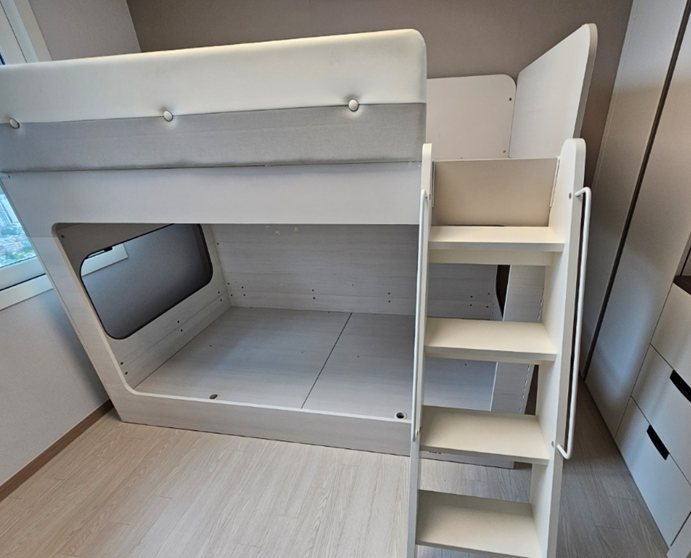
이층침대 이전사촌동생에게 물려주는 이층침대를 스크래치 없이 분리해 이전하고, 새 방 치수에 맞춰 설치했습니다.
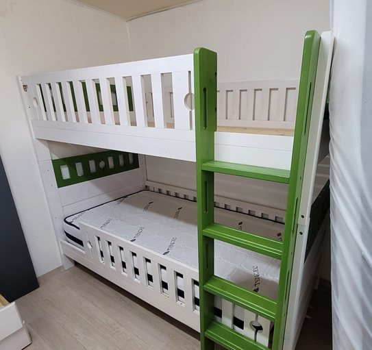
이층침대 분리오빠와 여동생이 함께 쓰던 이층침대입니다. 방을 나누면서 단층침대 2개로 분리해 달라는 요청이었습니다.
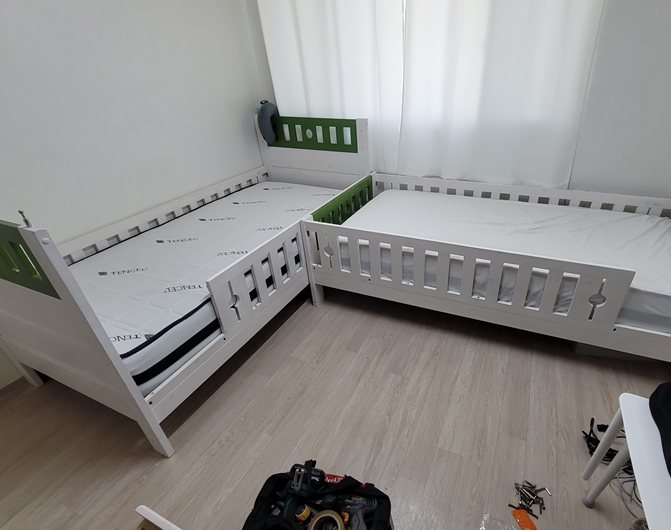
이층침대 분리분리한 프레임을 두 방에 각각 재조립했습니다. 안전가드와 사다리 부재도 용도에 맞게 정리했습니다.
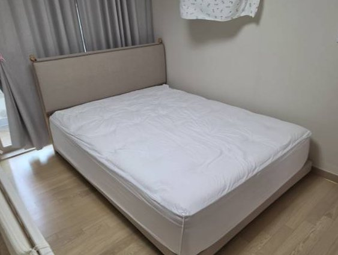
시몬스 침대 이전이사 후 새 방에서 시몬스 프레임과 매트리스를 원래대로 세팅했습니다.
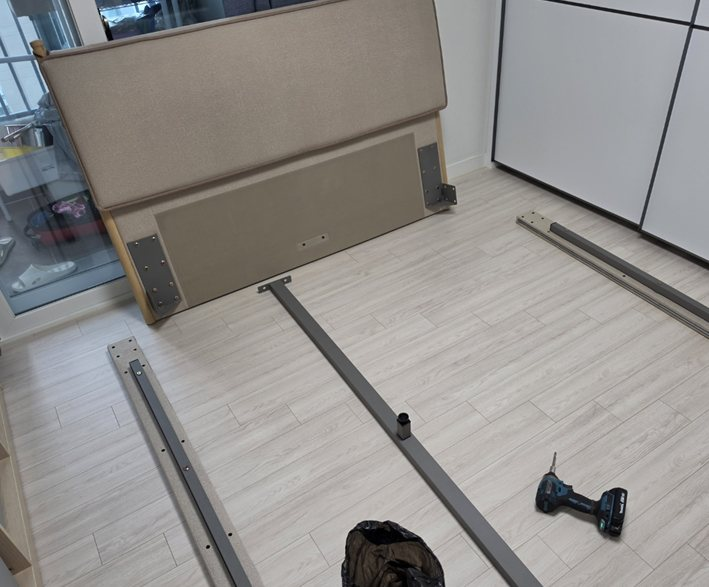
시몬스 침대 분해헤드보드 연결부와 측면 레일을 분리한 단계입니다. 볼트 방식을 확인하고 순서대로 풀어 부재가 손상되지 않게 합니다.
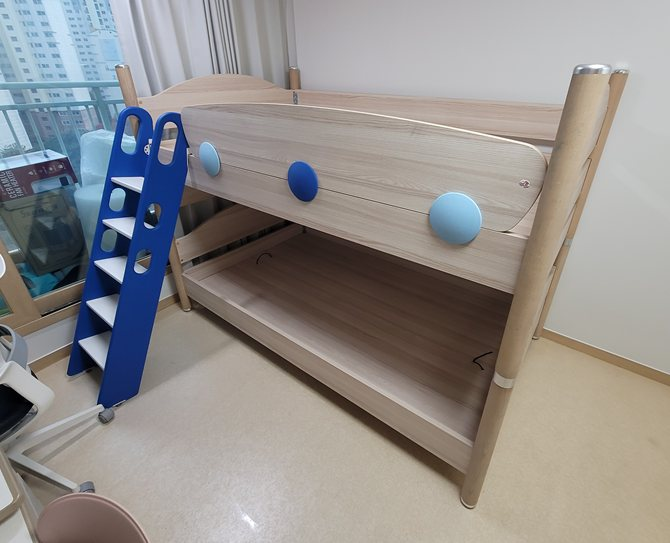
키즈침대 이전형제가 각자 방을 쓰게 되면서 사다리형 이층침대를 다른 방으로 옮겨 재배치했습니다.
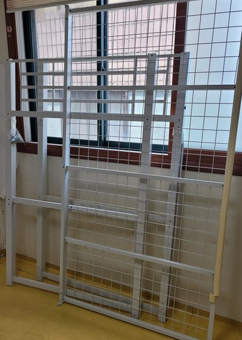
철재 벙커침대철재 벙커침대도 이전이 가능합니다. 녹슨 볼트는 사진으로 미리 확인하고 방문합니다.
아래 브랜드 외에도 사진을 보내 주시면 확인해 드립니다.
경기, 서울 및 수도권 전체 출장합니다.
마포 · 동대문 · 강동 · 여의도 등 서울 전역
수원 · 성남 · 용인(수지·기흥) · 안양 · 광명 · 시흥 · 고양(행신) 등
계양 · 서구 · 부평 · 검단 등 수도권 전체
벙커침대 이전 문의에서 가장 많이 받는 질문입니다.
대부분 분해, 이동, 재조립까지 당일 마무리합니다. 구조가 복잡한 일체형(책상·수납 포함)이나 이동 거리가 멀면 시간이 더 걸릴 수 있어, 사진을 받아 보고 예상 시간을 먼저 안내해 드립니다.
가능합니다. 이사업체는 침대 분해를 별도 작업으로 보거나 어려워서 거절하는 경우가 많습니다. 코니처는 가구 분해·재조립을 전문으로 하며 이사업체와 따로 일정을 잡으셔도 됩니다.
네, 이미 해체되어 부속이 모여 있는 상태에서 새집 재설치만 맡기셔도 됩니다. 부속 사진을 보내 주시면 부품 누락 여부를 먼저 확인합니다.
가능합니다. 원목은 볼트 방향과 결을 고려해 풀고, 철재는 너트·볼트 상태(녹 등)를 사진으로 미리 확인한 뒤 방문합니다.
시몬스, 한샘, 리바트, 까사미아, 슬로우, 금성침대, 에몬스, 삼익가구, 이케아, 일룸, 애보니아, 꿈꾸는요셉 등 브랜드 침대의 분해 이전 경험이 있습니다. 모델 사진을 보내 주세요.
됩니다. 이사가 아니어도 방에서 방으로 침대·책상·옷장 위치를 바꾸는 가구 재배치를 해 드립니다.
서울, 경기 및 수도권 전체 출장합니다. 인천을 포함한 수도권 지역은 문자로 주소(동 단위)를 알려 주시면 가능 여부를 바로 안내해 드립니다.
침대 종류(벙커·이층·단층), 분해 난이도, 층수·엘리베이터, 이동 거리에 따라 달라집니다. 사진과 주소를 문자로 보내 주시면 확인 후 견적을 안내해 드립니다.